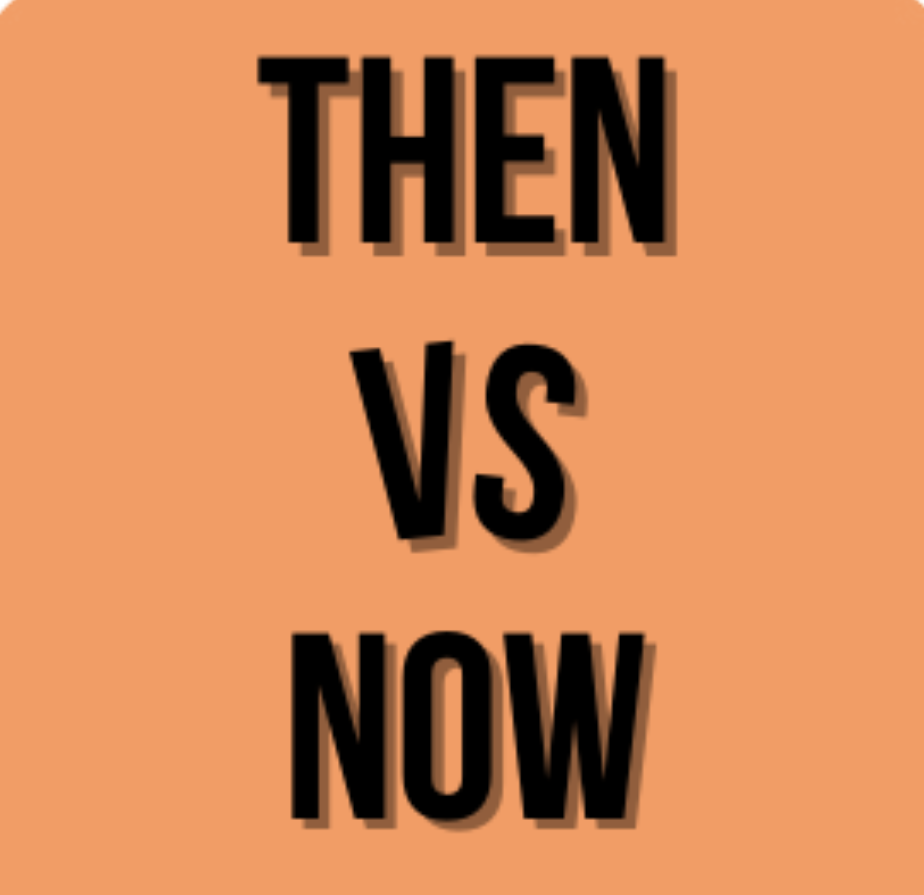

De Overload aan Superheldenfilms
Superheldenfilms zijn super populair, maar is er niet een overdaad
aan het zelfde concept? We bespreken waarom deze
films zo populair zijn, en wat voor invloed ze hebben op het publiek.
Subonderwerpen:
De opkomst van Marvel en DC
Hoe superheldenfilms andere genres voorbijgaan in populariteit
Remakes en Reboots: Waarom Alles Opnieuw Doen?
Waarom zien we steeds meer oudefilms in een nieuwe jas? Zijn de klassiekers niet al goed genoeg?
We bespreken de voor en nadelen van remakes en reboots.
Subonderwerpen:
Succesvolle remakes (zoals Alice in Wonderland)
Minder succesvolle remakesGaat dit ten koste van het verhaal?
De Toekomst van Films: Gaat het Verbeteren?
Is er nog hoop voor meer creatieve films? We bespreken oplossingen die cruciaal zijn voor de verandering
in de filmindustrie om zo de originaliteit terug te kunnen brengen..
Subonderwerpen:
Kan technologie helpen bij de originaliteit van films?
Hoe stimuleer je een filmmaker om creatiever te zijn met filmverhalen.

Waarom Zijn Films Niet Meer Origineel?
In deze aflevering duiken we in hoe films vroeger origneel waren en waarom veel films tegenwoordig zo voorspelbaar zijn.
Wat is er eigenlijk veranderd in de industrie van films en bij het publiek.
Subonderwerpen:
Klassieke films
Waarom zijn films voorspelbaar en hoe kun je dat voorkomen.
De Macht van Geld in Hollywood
Geld speelt een grote rol in de hollywoodwereld. In deze aflevering kijken we wat voor impact geld heeft op de film wereld.
Subonderwerpen:
Hoe de het maken van films steeds “veiliger” wordt. Hier hebben we het over stuntmannen zoals Jackie Chan.
Hoe heeft geld invloed op de inzet van de acteurs.
Nepotisme op het grote scherm
Originele Films die Succesvol Waren
In deze aflevering zetten we onze favoriete films in het zonnetje. We hebben het over succesvolle films door de jaren heen. Van tekenfilms tot liveaction films.
Subonderwerpen:
Voorbeelden van succesvolle tekenfilms
Hoe deze originele (teken)films hebben gehad.
Wat een film origineel maakt